Nemesis: Resumo de Regras (PT-BR)
ORDEM DA RODADA
1. FASE DO JOGADOR
1Baralho de Ações do Jogador: todos compram até terem 5 cartas na mão.
Os efeitos das cartas de Ferimento Grave e do Cômodo Cabines alteram esse limite.
Se está vazio, embaralhe o descarte e forme um novo baralho.
2Ficha de Primeiro Jogador: passar à esquerda, exceto na 1ª fase da partida.
3Turno dos jogadores: a partir do Primeiro Jogador e em sentido horário, o jogador da vez escolhe uma opção:
Realizar 2 Ações
Realizar 1 Ação e passar a vez
Passar a vez
Ao passar a vez, o jogador pode descartar qualquer quantidade de cartas da mão, incluindo cartas de Contaminação. Depois disso, não realiza mais turnos nesta rodada, mas ainda pode jogar cartas “Interromper”.
O Personagem que termina seu turno em um Cômodo com um marcador de Fogo sofre 1 Ferimento Leve. Depois de passar, ele não sofre mais ferimentos por Fogo nesta rodada, mesmo que outros Personagens joguem depois dele.
Repita até que todos os jogadores tenham passado.
2. FASE DE EVENTO
1Trilha de Tempo: Mova o marcador de Tempo 1 espaço.
Se a nave salta enquanto a sequência de Autodestruição está ativa, a nave ainda assim é considerada destruída.
2Trilha de Autodestruição: Mova o marcador de Autodestruição 1 espaço se a sequência está ativa.
3Ataque de Intrusora: Cada Intrusora em Combate faz 1 Ataque no Cômodo. ➜ VEJA ATAQUE DE INTRUSORA
4Dano por Fogo: Cada Intrusora em um Cômodo com Fogo sofre 1 Dano. Destrua 1 Ovo não carregado em cada Cômodo com Fogo. ➜ VEJA DANO À INTRUSORA
5Carta de Evento: Compre e resolva 1 carta do baralho de Eventos:
Se está vazio, embaralhe o descarte e forme um novo baralho.
1Deslocamento: Todas as Intrusoras que tiverem seu símbolo na carta e fora de Combate se movem para um Cômodo adjacente através do Corredor cujo número está indicado na carta. ➜ VEJA DESLOCAMENTO DE INTRUSORA
Se é um Corredor Técnico, remova a miniatura das Intrusoras e adicione suas fichas no banco de Intrusoras.
Se é um Corredor com uma 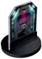
2Efeito do Evento: Siga as instruções e descarte a carta.
6Desenvolvimento do banco de Intrusoras: Compre 1 ficha e resolva seu efeito:
Em Branco: Retorne esta ficha ao banco. Adicione 1 ficha de Intrusora Adulta ao banco, se possível.
Larval: Remova esta ficha (não a devolva ao banco). Adicione 1 ficha de Intrusora Adulta ao banco.
Rastejante: Remova esta ficha do banco. Adicione 1 ficha de Reprodutora ao banco.
Adulta ou Reprodutora: Retorne esta ficha ao banco. Todos os jogadores fora de Combate, em ordem de turno, fazem uma 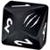
MOMENTOS CRÍTICOS
PRIMEIRO ENCONTRO
Quando a primeira miniatura de Intrusora aparecer no tabuleiro, cada jogador remove do jogo uma de suas cartas de Objetivo, sem revelá-la.
Ovos não contam como Intrusoras para ativar o Primeiro Encontro.
PRIMEIRO PERSONAGEM A MORRER
Depois que o primeiro Personagem morrer, todas as Cápsulas de Fuga devem ser Destravadas.
TRILHA DE TEMPO
Quando o marcador de Tempo alcançar qualquer espaço azul da Trilha de Tempo, as câmaras de Hibernação se abrem.
Os Personagens não podem entrar nas câmaras antes desse momento.
TRILHA DE AUTODESTRUIÇÃO
Quando o marcador de Autodestruição alcançar o primeiro espaço amarelo, a sequência não pode mais ser interrompida; destrave todas as Cápsulas de Fuga.
AÇÕES
Para realizar uma Ação, descarte da sua mão o número de cartas de Ação igual ao Custo indicado.
O Custo é pago antes de resolver a Ação. Se a Ação é interrompida/cancelada, o Custo continua pago. Se um Item de Uso Único é cancelado depois de usado, descarte o Item mesmo assim.
Cartas de Contaminação não podem ser descartadas para pagar o Custo de uma Ação.
EM COMBATE / FORA DE COMBATE
Um Personagem está em Combate quando está em um Cômodo com qualquer miniatura de Intrusora.
Ovos não fazem um Personagem entrar em Combate.
AÇÕES BÁSICAS
Deslocar-se: Mova seu Personagem para um Cômodo adjacente diretamente conectado por um Corredor. Portas Fechadas bloqueiam o Deslocamento.
Não faça rolagem de Ruído se entra em um Cômodo com outra miniatura de Personagem ou Intrusora.
Entrar em um Cômodo com uma miniatura de Intrusora te coloca imediatamente em Combate; isso não é um Encontro.
Personagens não podem acessar as Entradas e Espaços de Corredores Técnicos, exceto quando um efeito diz explicitamente o contrário.
1Se a peça de Cômodo está virada para baixo, vire-a para cima. Depois, revele a ficha de Exploração, resolva seu efeito e remova-a do jogo. Em seguida, gire a peça de Cômodo até que sua quantidade de Itens esteja alinhada com o Contador de Itens impresso no tabuleiro, no espaço do Cômodo. ➜ VEJA FICHAS DE EXPLORAÇÃO
Você não determina a quantidade de Itens no Ninho ou Cômodo Coberto por Gosma.
Alguns efeitos da ficha de Exploração podem cancelar o passo 2 a seguir.
2Se o Cômodo está vazio, sem Personagem e Intrusora: Faça uma rolagem de Ruído.
Deslocar-se Cuidadosamente: Resolva uma Ação Deslocar-se, mas, em vez de fazer uma rolagem de Ruído ao final do Deslocamento, coloque 1 marcador de Ruído em um Corredor à sua escolha conectado ao Cômodo em que você entrou. Se todos os Corredores conectados ao Cômodo já têm marcadores de Ruído, ou se você está em Combate, você não pode realizar esta Ação.
Se entra em um Cômodo inexplorado, revele a ficha de Exploração normalmente. Resolva seus efeitos normalmente, exceto SILÊNCIO e PERIGO, que são ignorados e substituídos pelo marcador de Ruído escolhido do Deslocamento Cuidadoso.
Pegar um Objeto Pesado: Pegue 1 Objeto Pesado (Cadáver, Carcaça de Intrusora ou Ovo) presente no Cômodo e coloque-o em um dos espaços de Mão no seu tabuleiro de Personagem. Se os 2 espaços de Mão estão ocupados, você pode Largar um dos Itens ou Objetos Pesados carregados.
Você não precisa usar essa Ação se encontra Itens Pesados ao “Procurar”.
Negociar: Todos os Personagens no mesmo Cômodo que você podem trocar ou doar quaisquer cartas de Item e Objetos Pesados entre si.
Personagens não podem trocar Munição separadamente.
Armas mantêm a Munição.
Um jogador pode entregar cartas de Item e Objetos Pesados sem pedir nada em troca.
Construir Item: Descarte 2 cartas de Item com os símbolos azuis de Construção requeridos para receber 1 carta de Item Construído com os símbolos cinza correspondentes. Se a carta do Item Construído não está mais disponível, você não pode realizar esta Ação.
Armas Construídas têm Munição completa.
Você pode olhar o baralho de Itens Construídos a qualquer momento.
Fugir: Resolva um Ataque de Intrusora separado para cada Intrusora no Cômodo, antes de sair. ➜ VEJA ATAQUE DE INTRUSORA. Se sobrevive, resolva uma Ação Deslocar-se.
Atirar:
1Escolha uma Arma com Munição da sua Mão e uma Intrusora no mesmo Cômodo como alvo do Ataque:
2Descarte 1 marcador de Munição da Arma escolhida.
3Role 1 dado de Combate e verifique o resultado. ➜ VEJA COMBATE
Atacar Corpo-a-Corpo:
1Escolha uma Intrusora no mesmo Cômodo como alvo.
2Compre 1 carta do baralho de Contaminações e coloque-a na sua pilha de descarte de cartas de Ação (exceto se o alvo é Ovos não carregados).
3Role 1 dado de Combate e verifique o resultado. ➜ VEJA COMBATE
Destruir Ovos Não Carregados: Você pode destruir Ovos não carregados no Cômodo resolvendo uma Ação Atirar OU Atacar Corpo-a-Corpo, OU uma carta de Item Granada ou Coquetel Molotov. Em seguida, faça uma rolagem de Ruído.
Pague o Custo da Ação ou carta de Item escolhido normalmente.
Cada 1 Dano destrói 1 Ovo.
No Ninho, os Ovos do tabuleiro das Intrusoras também contam como Ovos não carregados.
AÇÕES DAS CARTAS DE AÇÃO
1Descarte da sua mão a carta de Ação que quer realizar.
2Descarte da sua mão o número de cartas de Ação adicionais igual ao Custo indicado para pagar o Custo dela.
3Resolva a Ação. Se a carta tem seções separadas por “OU”, escolha uma delas para realizar.
AÇÕES DAS CARTAS DE ITEM
1Descarte da sua mão o número de cartas de Ação adicionais igual ao Custo indicado para pagar o Custo dele.
2Resolva o Item. Se a carta tem seções separadas por “OU”, escolha uma delas para realizar.
Item de Uso Único deve ser descartado depois do uso.
AÇÕES DAS PEÇAS DE CÔMODOS
Você não pode realizar Ação de Cômodo se está em Combate OU se o Cômodo tem um marcador de Defeito, exceto quando um efeito diz explicitamente o contrário.
Cômodos com Computador com um marcador de Defeito são considerados sem Computador.
CÔMODOS BÁSICOS “1”
ÁREA DE EVACUAÇÃO A/B
Tentar Entrar: Se há uma Cápsula de Fuga Destravada com pelo menos 1 espaço vago na seção correspondente, e não houver Intrusora ou marcador de Defeito na Área de Evacuação correspondente, tente entrar na Cápsula realizando uma rolagem de Ruído.
Se uma Intrusora aparece nesse Cômodo, você não entra na Cápsula de Fuga.
Caso contrário, coloque seu Personagem em um espaço da Cápsula de Fuga Destravada correspondente e resolva “Lançar a Cápsula” ou “Esperar”.
Cada Cápsula comporta até 2 Personagens.
Objetos Pesados não ocupam vaga na Cápsula.
Apenas se o seu Personagem está dentro de uma Cápsula de Fuga, sem pagar o Custo de uma nova Ação:
Esperar: Mantenha sua miniatura na Cápsula e passe a vez. No início do seu primeiro turno da Fase do Jogador seguinte, resolva “Esperar”, “Lançar a Cápsula” ou “Sair da Cápsula”.
Se uma Intrusora aparece na Área de Evacuação correspondente enquanto espera, resolva “Sair da Cápsula”.
Se outro Personagem entra na mesma Cápsula que você, ele pode decidir “Lançar a Cápsula” imediatamente.
Lançar a Cápsula: Remova a miniatura do Personagem e a ficha da Cápsula, pois você não participa mais do jogo. Aguarde a Verificação de Vitória ao final do jogo para saber se venceu.
Sair da Cápsula: Retire o Personagem da Cápsula e coloque-o de volta na Área de Evacuação correspondente.
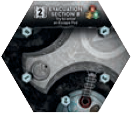
ARSENAL
Recarregar Arma de Energia: Adicione 2 marcadores de Munição a 1 das suas Armas de Energia, sem exceder o limite de Munição.
Não recarrega Armas Clássicas.
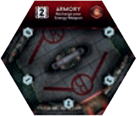
DEPÓSITO
Procurar um Item: Compre 2 cartas de um baralho de Item. Fique com uma delas e coloque a outra no fundo do baralho.
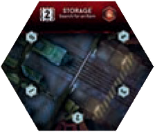
GERADOR
Iniciar / Interromper a Sequência de Autodestruição:
Para Iniciar, coloque 1 marcador de Status no espaço verde da Trilha de Autodestruição. Se há Personagem hibernando, você não pode realizar esta Ação.
Para Interromper, remova o marcador de Status. Se o marcador de Status alcançou um espaço amarelo na Trilha de Autodestruição, ou a sequência não foi Iniciada, você não pode realizar esta Ação.
Quando o marcador de Autodestruição chegar ao primeiro espaço Amarelo, vire todas as fichas de Cápsulas de Fuga para o lado “Destravada”. Depois disso, elas só voltam a ser destravadas manualmente.
Se o marcador de Status chega ao espaço vermelho, a nave explode.
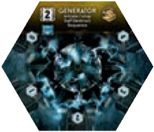
LABORATÓRIO
Analisar um Objeto:
1Escolha 1 Objeto Pesado (Cadáver, Carcaça de Intrusora ou Ovo) no Cômodo, carregado ou não.
2Revele a carta de Fraqueza das Intrusoras correspondente no tabuleiro das Intrusoras.
O Objeto analisado não é descartado.
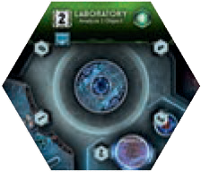
NINHO
Pegar um Ovo: Pegue 1 ficha de Ovo do tabuleiro das Intrusoras e faça uma rolagem de Ruído.
Realize a Ação “Destruir Ovos Não Carregados” para tentar destruir os Ovos do tabuleiro das Intrusoras.
O Ninho é destruído quando todos os Ovos no tabuleiro das Intrusoras foram pegos ou destruídos (é requisito em alguns Objetivos; coloque 1 marcador de Dano como lembrete).
Se há marcador de Fogo no Ninho na Fase de Evento, destrua 1 Ovo do tabuleiro das Intrusoras.
Não recebe marcador de Defeito.
Não realiza a Ação “Procurar”.
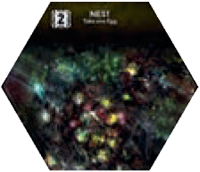
SALA DE CIRURGIA
Realizar um Procedimento Cirúrgico: Escaneie todas as suas cartas de Contaminação do baralho de Ações, da mão e da pilha de descarte e remova todas as cartas com “INFECÇÃO”. Remova a Larval do seu tabuleiro (se houver), sofra 1 Ferimento Leve e passe a vez. Depois, embaralhe suas cartas de Ação e monte um novo baralho.
Após um Procedimento Cirúrgico, sua mão deve ficar vazia até o começo da próxima rodada. Não compre cartas imediatamente.
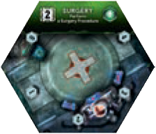
SALA DE EMERGÊNCIA
Tratar Ferimentos: Escolha uma opção:
Enfaixar todos os seus Ferimentos Graves
Curar 1 Ferimento Grave Enfaixado
Curar todos os seus Ferimentos Leves
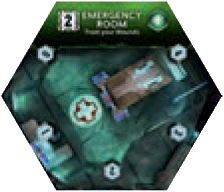
SALA DO COMUNICADOR
Enviar um Sinal: Coloque 1 marcador de Status no espaço Sinal do seu tabuleiro de Personagem (é requisito em alguns Objetivos).
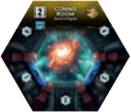
SISTEMA DE CONTROLE DE INCÊNDIO
Iniciar o Procedimento de Controle de Incêndio: Escolha 1 Cômodo com ou sem marcador de Fogo:
1Para cada Intrusora nele, compre 1 carta de Evento e mova-a para o Corredor indicado na carta;
2Descarte o marcador de Fogo (se houver).
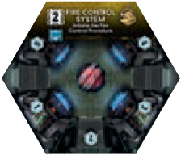
CÔMODOS ADICIONAIS “2”
BANHEIRO COM DUCHA
Tomar uma Ducha: descarte o marcador de Status no espaço 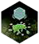
Opcionalmente, escaneie as cartas de Contaminação da sua mão e remova as que não tiverem “INFECÇÃO”. Se alguma tem “INFECÇÃO”, mantenha ela na mão e adicione uma Larval no seu tabuleiro de Personagem. Se já há, o Personagem morre: remova do jogo sua miniatura e coloque 1 Rastejante no Cômodo.
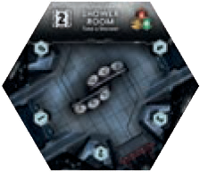
CABINES
Descansar: Se você está fora de Combate e o Cômodo não tem marcador de Defeito: no começo da Fase do Jogador, compre 1 carta de Ação adicional do seu baralho de Ações.
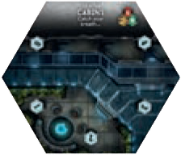
CASA DE MÁQUINAS
Conferir os Motores: Confira o status dos 3 Motores, mesmo se há um marcador de Defeito no Cômodo do Motor. Você não é obrigado a dizer a verdade sobre o que viu.
Você não pode mudar o status dos Motores.
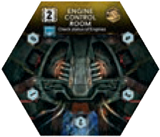
CENTRO DE COMANDO
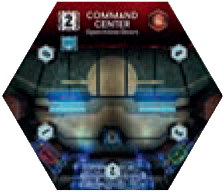
CÔMODO COBERTO POR GOSMA
Melou! Ao entrar, coloque um marcador de Status no espaço Gosma do tabuleiro de Personagem antes de resolver a ficha de Exploração.
Não recebe marcador de Defeito.
Não realiza a Ação “Procurar”.
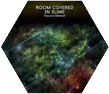
CONTROLE DE VEDAÇÃO
Iniciar a Despressurização de um Cômodo Amarelo: Escolha 1 outro Cômodo Amarelo sem qualquer Porta Destruída:
1Feche todas as suas Portas.
2Coloque a ficha de Despressurização no Cômodo.
Se alguma é aberta antes do fim da Fase do Jogador, descarte a ficha.
Se todas as Portas estão fechadas no fim da Fase do Jogador, tudo no Cômodo morre. Descarte o marcador de Fogo (se houver).
Não remova Objetos, Cadáveres e Carcaças.
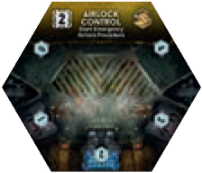
REFEITÓRIO
Fazer uma Boquinha: Cure 1 Ferimento Leve.
Opcionalmente, escaneie as cartas de Contaminação da sua mão e remova as que não tiverem “INFECÇÃO”. Se alguma tem “INFECÇÃO”, mantenha ela na mão e adicione uma Larval no seu tabuleiro de Personagem. Se já há, o Personagem morre: remova do jogo sua miniatura e coloque 1 Rastejante no Cômodo.
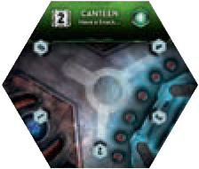
SALA DE MONITORAMENTO
Conferir 1 Cômodo e sua ficha de Exploração: Veja secretamente a peça de 1 Cômodo inexplorado e sua ficha de Exploração. Depois coloque-as fechadas de volta no tabuleiro. Você não é obrigado a dizer a verdade sobre o que viu.
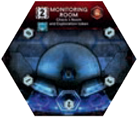
SISTEMA DE CONTROLE DA ESCOTILHA
Travar/Destravar 1 Cápsula de Fuga: Vire 1 ficha de Cápsula de Fuga para o lado oposto.
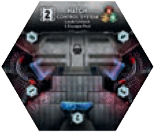
CÔMODOS ESPECIAIS
São considerados explorados desde o início.
Não realiza a Ação “Procurar”.
COCKPIT
Conferir Coordenadas: Veja secretamente a carta de Coordenadas e coloque-a de volta no tabuleiro, virada para baixo.
Você não precisa dizer a verdade sobre o que viu.
Definir Destino: Mova o marcador de Destino para a posição desejada. Se há Personagem hibernando, você não pode realizar esta Ação.
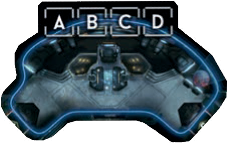
HIBERNATÓRIO
Tentar Hibernar: faça uma rolagem de Ruído. Se o marcador de Tempo não alcançou um espaço azul, ou se há uma Intrusora no Cômodo, você não pode realizar esta Ação.
Se qualquer Intrusora entra no Cômodo, a Ação falha.
Caso contrário, o Personagem estará hibernando: retire sua miniatura do tabuleiro e aguarde o fim da partida.
O Destino não pode mais ser alterado e a sequência de Autodestruição não pode ser iniciada depois que um Personagem hiberna.
Exceção: a carta de Evento “Vazamento de Líquido Refrigerante” (com marcador de Defeito no Gerador) inicia a contagem de Autodestruição mesmo que algum Personagem já esteja hibernando.
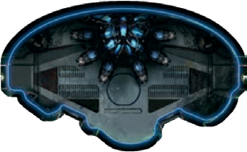
MOTORES “01”, “02” e “03”
Verificar o Motor: Veja secretamente a ficha de Motor do topo da pilha e coloque-a fechada de volta no tabuleiro. Você não precisa dizer a verdade sobre o que viu.
Reparar/Quebrar o Motor: Use a carta de Ação “Reparar” ou uma carta de Item “Ferramentas” para olhar secretamente as 2 fichas de Motor e recolocá-las viradas para baixo na ordem que desejar, mesmo se há um marcador de Defeito no Cômodo. Você não precisa dizer se reparou ou quebrou o Motor, mas deve informar se mudou ou não a ordem das fichas.
O marcador de Defeito no Cômodo do Motor desabilita a Ação do Cômodo, mas não altera o status do Motor.
Se pelo menos 2 Motores indicarem o status Danificado, a nave explode no fim do jogo.
Defeito no Cômodo Motor desabilita a Ação do Cômodo, mas não muda o status Funcionando/Danificado.
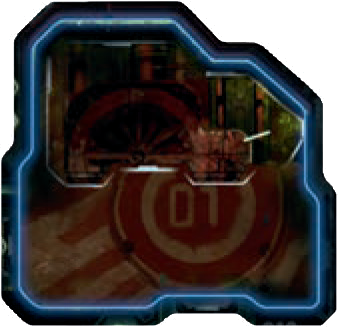
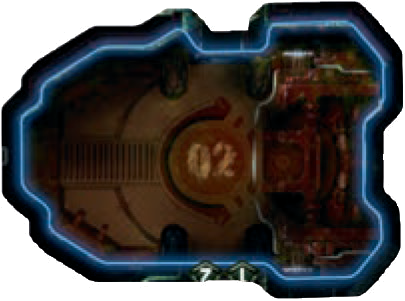
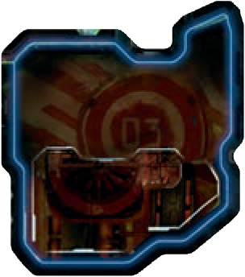
ROLAGEM DE RUÍDO
Role 1 dado de Ruído e resolva o resultado:
Ao se Deslocar, você só faz rolagem de Ruído ao entrar em Cômodo vazio. Se há Personagem ou Intrusora no Cômodo de destino, não role Ruído.
: Coloque 1 marcador de Ruído em um Corredor conectado com o mesmo número do resultado, incluindo Corredores Técnicos. Se o Corredor já contém um, resolva um Encontro em vez disso. ➜ VEJA ENCONTRO
PERIGO: Se há miniaturas de Intrusora fora de Combate em Cômodos adjacentes, desloque-as para este Cômodo. Caso contrário, coloque 1 marcador de Ruído em cada Corredor conectado que ainda não tenha marcador de Ruído, incluindo Corredores Técnicos.
ENCONTRO
Um Encontro acontece quando uma Intrusora aparece em um Cômodo onde há pelo menos 1 Personagem depois de comprar uma ficha do banco de Intrusoras. Algumas cartas de Evento e Ataque também podem causar Encontros.
Uma Intrusora andando até um Cômodo com Personagem não causa Encontro.
1Descarte todos os marcadores de Ruído dos Corredores conectados ao Cômodo, incluindo Corredores Técnicos.
2Compre 1 ficha do banco de Intrusoras:
Se é Ficha em Branco: coloque 1 marcador de Ruído em cada Corredor conectado ao Cômodo. Se esta ficha era a última ficha do banco, adicione 1 ficha de Intrusora Adulta ao banco, se possível. Retorne esta ficha ao banco e encerre o Encontro.
Se é qualquer outra ficha: Coloque no Cômodo a miniatura correspondente ao símbolo da ficha. Compare o número da ficha com a quantidade de cartas na mão do jogador que causou o Encontro, incluindo Contaminações. Se tem menos cartas que o número da ficha, acontece um Ataque Surpresa. Se tem igual ou mais, nada acontece. Por fim, descarte a ficha comprada, pois ela pode voltar ao banco se uma Intrusora daquele tipo se esconde nos Corredores Técnicos.
COMBATE
Um Personagem está em Combate quando está em um Cômodo com uma Intrusora.
As únicas Ações possíveis em Combate são Fugir, Atirar e Atacar Corpo-a-Corpo.
Ovos podem ser atacados Somente fora de Combate, e não contam como Intrusoras para a ativação do Primeiro Encontro.
Ações de Ataque direto só podem ferir Intrusoras, nunca Personagens.
ATIRAR
Resultados do dado de Combate:
Nada acontece.
Se o alvo é Rastejante ou menor, causa 1 Dano no alvo. Resolva DANO À INTRUSORA.
Caso contrário, nada acontece.
Se o alvo é Adulta ou menor, causa 1 Dano no alvo. Resolva DANO À INTRUSORA.
Caso contrário, nada acontece.
Causa 1 Dano no alvo. Resolva DANO À INTRUSORA.
Causa 2 Danos no alvo. Resolva DANO À INTRUSORA.
CORPO-A-CORPO
Resultados do dado de Combate:
O Personagem sofre 1 Ferimento Grave (exceto se o alvo é Ovo).
Se o alvo é Rastejante ou menor, causa 1 Dano no alvo. Resolva DANO À INTRUSORA.
Caso contrário, o Personagem sofre 1 Ferimento Grave (exceto se o alvo é Ovo).
Se o alvo é Adulta ou menor, causa 1 Dano no alvo. Resolva DANO À INTRUSORA.
Caso contrário, o Personagem sofre 1 Ferimento Grave (exceto se o alvo é Ovo).
Causa 1 Dano no alvo. Resolva DANO À INTRUSORA.
Causa 1 Dano no alvo. Resolva DANO À INTRUSORA.
DANO À INTRUSORA
Quando uma Intrusora sofre Dano, coloque a quantidade correspondente de marcadores de Dano na base dela. Depois, verifique o Efeito do Dano por alvo:
Não coloque marcadores de Dano em Ovos. Em vez disso, remova 1 ficha de Ovo a cada 1 Dano.
Larval/ Ovo: 1 Dano basta para matar/destruir. Remova a miniatura/ficha. Não compre carta de Ataque para verificar sangue.
Rastejante/ Intrusora Adulta: compre 1 carta de Ataque de Intrusora e confira apenas o símbolo de sangue. Se o valor é igual ou menor que a quantidade de marcadores de Dano na Intrusora, ela morre: remova a miniatura e coloque 1 ficha de Carcaça no Cômodo.
Reprodutora/ Rainha: compre 2 cartas de Ataque de Intrusora, some os valores dos símbolos de sangue e compare com os marcadores de Dano. Se o total é igual ou menor, ela morre.
Recuo: se qualquer carta comprada para verificar Dano mostra seta de Recuo, a Intrusora Recua. Compre 1 carta de Evento, mova a Intrusora pelo Corredor indicado na seção de Deslocamento de Intrusora e descarte a carta de Evento.
Dano acumulado permanece na Intrusora que Recua. Se ela entra em Corredor Técnico, os Danos são descartados junto com a miniatura.
ATAQUE DE INTRUSORA
Ataques de Intrusora acontecem em 3 situações: Ataque Surpresa, quando um Personagem foge de um Cômodo com Intrusoras, e no passo Ataque de Intrusora na Fase de Evento.
1Defina o Personagem alvo:
Se é Ataque Surpresa, Fuga ou o único Personagem no Cômodo, o alvo é este Personagem.
Caso contrário, o alvo é o Personagem no Cômodo que tiver menos cartas de Ação na mão. Em caso de empate, use a ordem do turno a partir do Primeiro Jogador.
2Resolva o efeito do Ataque:
Se a Intrusora é uma Larval, resolva uma INFESTAÇÃO.
Caso contrário, compre 1 carta de Ataque de Intrusora. Se essa carta tem símbolo correspondente ao tipo da Intrusora atacante, resolva o efeito; se não tem, o Ataque erra. O símbolo de sangue é ignorado durante Ataques.
Se o baralho está vazio, embaralhe o descarte para formar um novo baralho.
3Descarte a carta de Ataque.
INFESTAÇÃO
É o Ataque de uma Larval.
1Não compre carta de Ataque de Intrusora para a Larval.
2Remova a Larval Atacante do tabuleiro e coloque-a no tabuleiro do Personagem alvo, se ele ainda não tem uma. Se ele já tem uma Larval, a Larval Atacante é apenas removida e a do tabuleiro permanece.
3Se o Personagem está vivo, ele compra 1 carta do baralho de Contaminações e a coloca no topo da sua pilha de descarte de cartas de Ação
FICHAS DE EXPLORAÇÃO E MARCADORES
Ao entrar em um Cômodo inexplorado (peça virada para baixo):
1Vire para cima a peça de Cômodo.
2Revele a ficha de Exploração, resolva seu efeito e remova-a do jogo.
3Determine a quantidade de Itens girando a peça de Cômodo até que a quantidade de Itens dele esteja alinhada com o Contador de Itens impresso no tabuleiro, no espaço do Cômodo.
Não determine a quantidade de Itens no Ninho ou Cômodo Coberto por Gosma.
Alguns efeitos da ficha de Exploração podem cancelar o passo 2.
4Se o Cômodo está vazio (sem Personagem e Intrusora), faça uma rolagem de Ruído.
EFEITOS ESPECIAIS
SILÊNCIO: Não faça uma rolagem de Ruído. Se o Personagem está coberto por Gosma, resolva como se o resultado fosse PERIGO.
PERIGO: Não realize uma rolagem de Ruído. Se há miniaturas de Intrusora fora de Combate em Cômodos adjacentes, desloque todas elas para esse Cômodo. Caso contrário, coloque 1 marcador de Ruído em cada Corredor conectado que ainda não tenha marcador de Ruído, incluindo Corredores Técnicos.
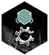
DEFEITO: Coloque 1 marcador de Defeito no Cômodo. Se já tem um, nada acontece. Se não há marcador disponível, a nave explode e o jogo acaba.
A Ação de Cômodo fica indisponível. Você ainda pode usar a carta de Ação “Procurar” normalmente.
Se é um Cômodo com Computador, o Computador fica indisponível, como se não houvesse símbolo de Computador.
Não afeta o status dos Motores.
Nunca é colocado no Ninho ou Cômodo Coberto por Gosma.
Marcador de Defeito não pode ser colocado em Cômodo inexplorado.
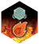
FOGO: Coloque 1 marcador de Fogo no Cômodo. Se já tem um, nada acontece. Se não há marcador disponível, a nave explode e o jogo acaba.
A Ação de Cômodo e carta de Ação “Procurar” continuam disponíveis normalmente.
Marcador de Fogo pode ser colocado em Cômodo inexplorado.
Fogo pode se espalhar para Cômodo inexplorado.
GOSMA: Coloque um marcador de Status no espaço de Gosma do seu tabuleiro de Personagem. Se já tem um, nada acontece.
Personagens cobertos por Gosma resolvem os efeitos de SILÊNCIO como se fossem PERIGO.
Você pode se livrar do marcador de Gosma usando a carta de Item “Trajes” ou realizando uma Ação Tomar uma Ducha, no Banheiro com Ducha.
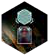
PORTAS: Coloque 1 ficha de Porta, em pé, no Corredor usado para entrar no Cômodo. Se não há ficha disponível, pegue qualquer ficha de Porta Fechada no tabuleiro.
Se não há ficha de Porta disponível, pegue qualquer ficha de Porta não Destruída do tabuleiro; não pegue Porta Destruída.
Ficha de Porta não pode ser colocada em Corredor Técnico.
Não afeta marcadores de Ruído.
Resultados de PERIGO em uma rolagem de Ruído não ignoram Portas Fechadas.
Porta Aberta é indicada pela ausência de ficha de Porta no Corredor. No começo do jogo, todos os Corredores têm Portas Abertas.
Porta Fechada é indicada por uma ficha de Porta em pé e impede que Personagens, Intrusoras e Granadas arremessadas atravessem o Corredor.
Se uma Intrusora tenta se deslocar por um Corredor com uma Porta Fechada, ela não se desloca; em vez disso, destrói a Porta. ➜ VEJA DESLOCAMENTO DE INTRUSORA
Porta Destruída é indicada por uma ficha de Porta deitada (ou suporte sem Porta) e permite Deslocamento pelo Corredor. Ela nunca pode ser Fechada novamente, exceto pelo Item “Maçarico de Plasma” do Mecânico.
OUTRAS REGRAS GERAIS
DESLOCAMENTO DE INTRUSORA
Se uma Intrusora termina seu Deslocamento em um Cômodo inexplorado, não revele o Cômodo nem sua ficha de Exploração.
Uma Intrusora que se desloca para um Cômodo com Personagem não desencadeia Encontro; ela apenas entra em Combate com os Personagens no Cômodo.
Se uma Intrusora se desloca para uma Entrada dos Corredores Técnicos, ela desaparece pelos dutos: descarte todos os seus marcadores de Dano, retorne sua ficha ao banco de Intrusoras e remova sua miniatura do tabuleiro. Se há um marcador de Ruído no espaço dos Corredores Técnicos, não o remova.
Se uma Intrusora tenta se deslocar por um Corredor com uma Porta Fechada, ela não se desloca; em vez disso, destrói a Porta. Se várias Intrusoras estão se deslocando a partir do mesmo Cômodo, o Deslocamento delas é simultâneo: elas destroem a Porta e todas permanecem no Cômodo de origem.
Se você precisa colocar uma Intrusora Adulta e todas as 8 miniaturas já estão no tabuleiro, elas Recuam. Remova todas as Intrusoras Adultas que não estejam em Combate e coloque as fichas correspondentes de volta no banco de Intrusoras, se possível. Depois, coloque uma miniatura de Intrusora Adulta no Cômodo onde o Encontro aconteceu.
ATACANDO JOGADORES
Personagens não podem Atacar diretamente outros Personagens, mas podem feri-los acidental ou intencionalmente como efeito colateral de suas Ações.
Isso não impede efeitos indiretos: Granada, Fogo, Despressurização, Porta Fechada, Autodestruição, Destino errado e outros “acidentes” continuam podendo matar gente.
FERIMENTOS E MORTE DE PERSONAGEM
Ferimento Leve: coloque 1 marcador de Status no espaço superior da Trilha de Ferimentos Leves. Se já há marcador ali, mova-o para o espaço inferior. Se já há marcador no espaço inferior, descarte-o e compre 1 carta de Ferimento Grave.
Ferimento Grave: compre 1 carta de Ferimento Grave e aplique o efeito dela. Cartas de Ferimento Grave iguais não acumulam efeito, mas continuam contando para o limite de 3 Ferimentos Graves.
Enfaixar: vire a carta de Ferimento Grave para baixo. O efeito deixa de valer, mas ela ainda conta para o limite de 3 Ferimentos Graves.
Curar: remova Ferimentos Leves ou descarte uma carta de Ferimento Grave já Enfaixada, conforme o efeito da carta/ação usada.
Se um Personagem com 3 Ferimentos Graves sofre qualquer outro Ferimento (Leve ou Grave), ele morre. Coloque uma ficha de Cadáver no Cômodo onde ele morreu e remova a miniatura do Personagem do tabuleiro.
O Personagem larga Objetos Pesados no Cômodo onde morreu, e os Itens (normais e pesados) são removidos do jogo.
CARTAS DE CONTAMINAÇÃO
Quando receber uma carta de Contaminação, compre-a do baralho de Contaminações e coloque-a no topo da sua pilha de descarte de cartas de Ação.
Cartas de Contaminação ficam na mão como cartas normais, mas não são cartas de Ação: não pagam Custos e não oferecem Ação. Ao passar, você pode descartá-las normalmente.
Escanear: coloque a parte vermelha do Scanner sobre o campo codificado da carta.
Se a carta escaneada mostra “INFECÇÃO”, coloque 1 Larval no seu tabuleiro de Personagem. Não remova esta carta, exceto quando um efeito diz explicitamente o contrário.
Caso contrário, a carta não indica Infecção.
Se algum efeito manda remover uma carta de Contaminação, remova-a do jogo.
CARTAS DE FRAQUEZA DAS INTRUSORAS
Durante a preparação, há 3 Fraquezas viradas para baixo no tabuleiro das Intrusoras: uma ligada a Cadáver de Personagem, uma a Ovo de Intrusora e uma a Carcaça de Intrusora.
Para descobrir uma Fraqueza, leve ou tenha o Objeto correspondente no Laboratório e realize a Ação Analisar um Objeto. A Fraqueza revelada passa a valer para todos os jogadores.
O Objeto pesquisado não é descartado. Ele pode continuar no Cômodo, ser carregado ou ser largado normalmente.
ITENS, OBJETOS, MÃOS E INVENTÁRIO
Itens comuns existem em 3 baralhos: Vermelho (Militar), Amarelo (Técnico) e Verde (Médico). Eles ficam escondidos no seu Inventário, portanto, os outros jogadores veem a cor do Item, mas não qual carta é. Quando você usa uma carta de Item, deve revelá-la. Não há limite de Itens comuns no Inventário.
Itens Pesados têm símbolo de Mão, não ficam escondidos e ocupam 1 dos 2 espaços de Mão. Armas são Itens Pesados.
Objetos Pesados são fichas que podem ser Cadáver de Personagem, Carcaça de Intrusora e Ovo de Intrusora. Cada um ocupa 1 espaço de Mão.
Se você pega um Item/Objeto Pesado e seus 2 espaços de Mão já estão ocupados, largue 1 Item/Objeto Pesado antes de ficar com o novo.
Armas encontradas durante o jogo entram com 1 marcador de Munição, sem exceder a capacidade de Munição. Armas Iniciais e Armas Construídas seguem sua própria capacidade indicada.
Alguns Itens podem ser anexados a outros Itens. Coloque a carta anexada ao lado da carta principal; a partir daí, elas são tratadas como uma só.
Fita Adesiva pode combinar 2 Itens Pesados para ocuparem 1 espaço de Mão. Isso não vale para Objetos Pesados.
Largar: durante seu turno, você pode largar Itens ou Objetos sem gastar Ação. Objetos ficam no Cômodo. Itens são perdidos e descartados/devolvidos conforme o tipo de descarte indicado pela regra.
Itens largados vão para a pilha de descarte do baralho correspondente, a mesma dos Itens usados.
ITENS CONSTRUÍDOS
O baralho Azul contém Itens Construídos disponíveis. Para construir, descarte 2 cartas de Item comuns que tenham os símbolos azuis correspondentes aos símbolos cinza do Item Construído escolhido. Pegue a carta do Item Construído no baralho Azul.
Se a carta do Item Construído não está disponível no baralho Azul, ele não pode ser montado, mesmo que você tenha os Componentes.
Você pode consultar o que há no baralho Azul a qualquer momento.
ITENS DE BUSCA
Itens de Busca começam inativos, com o lado horizontal para cima. Quando cumprir o requisito da Busca, vire a carta para o lado vertical: ela passa a ser um Item comum.
PROCURAR
Itens Azuis são Construídos e não são encontrados com Procurar.
Ao realizar Procurar, compre 2 cartas do baralho da cor do Cômodo, escolha 1 e coloque a outra no fundo do baralho. Em Cômodo branco, escolha qualquer 1 dos 3 baralhos comuns.
Cada Ação Procurar reduz em 1 o Contador de Itens do Cômodo. Quando o Contador chega a 0, o Cômodo foi esvaziado e não pode mais ser procurado.
Cômodos Especiais, Ninho e Cômodo Coberto por Gosma não podem ser Procurados.
FIM DE JOGO E VERIFICAÇÃO DE VITÓRIA
FIM DE JOGO
O jogo termina quando uma destas condições acontece:
O marcador de Tempo é movido para o espaço final . A nave salta para o hiperespaço. Todos os Personagens a bordo que não estiverem hibernando morrem.
As Intrusoras sobrevivem ao salto.
O marcador de Autodestruição é movido para o espaço final
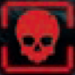
OU você é instruído a colocar um 9º marcador de Fogo ou Defeito. A nave é destruída e todos a bordo morrem (acordados e hibernando).Intrusoras morrem. Ovos de Intrusora e Ninho são destruídos.
O último Personagem vivo (não hibernando) na nave morre, hiberna ou usa uma Cápsula de Fuga. Se a sequência de Autodestruição está ativa, avance o marcador de Autodestruição até o espaço final da Trilha de Autodestruição; se não, avance o marcador de Tempo até o espaço final. Resolva os efeitos correspondentes descritos acima.
Se pelo menos 1 Personagem sobreviveu, siga para Verificação de Vitória.
VERIFICAÇÃO DE VITÓRIA
1Verificação dos Motores: revele a ficha de Motor do topo de cada Motor. Se 2 ou 3 Motores estão Danificados, a nave explode e Personagens hibernando morrem. Intrusoras também morrem.
2Verificação de Coordenadas: revele a carta de Coordenadas e confira o marcador de Destino. Se a nave não está indo para a Terra, Personagens hibernando morrem. Exceção: Objetivo Quarentena, que vence com destino Marte.
3Verificação de Contaminação: cada Personagem vivo escaneia suas Contaminações no baralho de Ações, na mão e na pilha de descarte. Se há Larval no tabuleiro de Personagem, pule este escaneamento e vá direto para o teste. Se há pelo menos 1 carta com INFECÇÃO, embaralhe todas as cartas de Ação e Contaminação e compre 4 cartas:
Se qualquer uma é carta de Contaminação, o Personagem morre.
Caso contrário, o Personagem sobrevive.
4Verificação de Objetivo: cada Personagem ainda vivo revela o Objetivo escolhido. Se cumpriu os requisitos, venceu.
PREPARAÇÃO
Devolva à caixa os baralhos de:
Ação de Intrusora
Objetivo Solo/Coop
Esses componentes só são usados em modalidades específicas.
1. CÔMODOS
Embaralhe separadamente, com a face para baixo:
1Peças de Cômodo “1”: Coloque 1 peça em cada espaço “1”.
2Peças de Cômodo “2”: Coloque 1 peça em cada espaço “2”.
3Fichas de Exploração: Coloque 1 ficha sobre cada peça de Cômodo.
Devolva à caixa tudo que sobrar, sem olhar.
Nem todos os Cômodos “2” entram em jogo.
2. MOTOR E COORDENADAS
Embaralhe separadamente, com a face para baixo:
1Fichas de Motor “01”: Coloque as 2 fichas empilhadas no espaço do Motor 01.
2Fichas de Motor “02”: Coloque as 2 fichas empilhadas no espaço do Motor 02.
3Fichas de Motor “03”: Coloque as 2 fichas empilhadas no espaço do Motor 03.
4Carta de Coordenadas: Coloque 1 no espaço ao lado do Cockpit.
Devolva à caixa as outras cartas de Coordenadas, sem olhar.
3. CÁPSULAS DE FUGA
Pegue aleatoriamente para:
1–2 jogadores: 2 Cápsulas de Fuga
3–4 jogadores: 3 Cápsulas de Fuga
5 jogadores: 4 Cápsulas de Fuga
Coloque a de menor número na Seção A, a próxima na Seção B e as demais alternando entre A e B, com o lado “Travada” para cima.
Devolva à caixa as Cápsulas de Fuga restantes.
4. TRILHAS
Coloque marcadores de Status:
1Trilha de Destino: no espaço “B” (marcador de Destino).
2Trilha de Tempo: no espaço verde (marcador de Tempo).
A Trilha de Autodestruição começa vazia.
5. INTRUSORAS
No tabuleiro das Intrusoras, coloque:
5 fichas de Ovo
3 cartas de Fraqueza das Intrusoras aleatórias viradas para baixo, nos espaços de Cadáver, Ovo e Carcaça.
Devolva à caixa as cartas de Fraqueza restantes, sem olhar.
No banco de Intrusoras, coloque:
4 fichas Larval
1 ficha Rastejante
3 fichas Adulta e +1 ficha Adulta por jogador
1 ficha Rainha
1 ficha Em Branco
Ao lado do tabuleiro das Intrusoras, coloque:
as fichas de Intrusora restantes
as fichas de Carcaça de Intrusora
6. BARALHOS
Embaralhe e coloque ao lado do tabuleiro, os baralhos de:
Itens Vermelhos
Itens Amarelos
Itens Verdes
Eventos
Coloque o Scanner próximo do baralho de Contaminações.
Deixe espaço para o descarte de cada baralho.
7. COMPONENTES GERAIS
Coloque os demais marcadores, fichas e dados ao lado do tabuleiro:
Marcadores de Munição/Dano,
Marcadores de Status,
Fichas vermelhas de Cadáver de Personagem,
Ficha de Primeiro Jogador
8. CARTAS DE AJUDA E INVENTÁRIO
1Pegue cartas de Ajuda em quantidade igual ao número de jogadores, sempre usando as menores numerações.
2Embaralhe e entregue 1 carta para cada jogador.
3Entregue para cada jogador o suporte de Inventário com o mesmo número.
Exemplo: em uma partida com 4 jogadores, use as cartas 1, 2, 3 e 4.
O número da carta de Ajuda é o número do jogador.
9. OBJETIVOS
Remova dos baralhos de Objetivos (Corporativos e Pessoais) todas as cartas que exigem mais jogadores do que há no jogo. Em seguida:
1Baralho de Objetivo Corporativo: Embaralhe e entregue 1 carta para cada jogador.
2Baralho de Objetivo Pessoal: Embaralhe e entregue 1 carta para cada jogador.
Devolva à caixa as cartas restantes, sem olhar.
Cada jogador mantém seus 2 Objetivos em segredo.
10. ALISTAMENTO DE PERSONAGEM
Embaralhe as cartas de Alistamento de Personagem.
A partir do Jogador “1”, em ordem de número, o jogador:
Compra 2 cartas
Escolhe 1 Personagem
Devolve ao baralho a carta não escolhida.
Repita até que todos tenham escolhido Personagens.
Em seguida, cada jogador pega os componentes do Personagem escolhido:
Tabuleiro de Personagem.
Miniatura do Personagem.
Anel plástico colorido.
Baralho de Ações do Personagem.
Item Inicial do Personagem.
2 Itens de Busca do Personagem.
Um jogador só pode controlar o Personagem que escolheu no Alistamento.
Em seguida, para cada jogador:
1Miniatura do Personagem: é colocada no Hibernatório, com o anel colorido.
2Baralho de Ações: é embaralhado e colocado à esquerda do tabuleiro de Personagem.
3Item Inicial: é colocado em um dos espaços de Mão, com marcadores de Munição (sobre a carta) igual à capacidade da Arma.
4Itens de Busca: as 2 cartas são colocadas ao lado do tabuleiro de Personagem, com o lado horizontal para cima.
Os Itens de Busca começam inativos. Eles só viram Itens comuns quando seus requisitos forem cumpridos.
Devolva à caixa as cartas de Alistamento de Personagem restantes e os componentes dos Personagens que não foram escolhidos.
11. FINALIZAÇÃO
1Ficha de Primeiro Jogador: O Jogador “1” pega a ficha.
2Cadáver de Personagem: Coloque a Ficha azul de Cadáver de Personagem no Hibernatório.
A ficha azul é tratada como um Objeto Pesado, e representa o corpo encontrado na nave no começo da partida.
A partida está pronta para começar.
OBJETIVOS DO JOGADOR
Para vencer, você precisa cumprir seu Objetivo escolhido e sobreviver. Sobreviver significa: hibernar no Hibernatório com a nave funcionando e indo para o destino correto, ou escapar em uma Cápsula de Fuga lançada.
Escapar em Cápsula de Fuga sempre conta como chegar à Terra. Depois de escapar, hibernar ou morrer, você não participa mais da partida e aguarda a Verificação de Vitória.
LEMBRETES RÁPIDOS DOS OBJETIVOS
O Personagem do Jogador <X> não pode sobreviver: esse Personagem não pode estar vivo no fim do jogo. Não precisa ser morto por você diretamente.
Seu Personagem é o único sobrevivente: nenhum outro Personagem pode sobreviver até o fim.
Se outro Personagem chega à fase Verificação de Objetivo, pode perder mesmo se ele não completa o Objetivo escolhido.
Enviar o Sinal: encontre a Sala do Comunicador e realize a Ação de Cômodo Enviar um Sinal.
A nave deve chegar à Terra/Marte: defina o Destino correto no Cockpit e garanta pelo menos 2 Motores Funcionando até o fim.
Descobrir uma Fraqueza: qualquer jogador pode descobrir; basta a Fraqueza estar revelada ao final do jogo.
Destruir o Ninho: não pode haver mais Ovos no tabuleiro das Intrusoras.
Se o marcador de Autodestruição chega ao espaço vermelho final, ou é preciso colocar um 9º marcador de Fogo ou de Defeito, a nave é destruída e todos a bordo morrem, acordados ou hibernando. Intrusoras, Ovos de Intrusoras e Ninho são destruídos.
MODALIDADES
Solo: use o baralho de Objetivos Solo/Coop. Compre 2 cartas no começo do jogo e escolha 1 quando acontecer o Primeiro Encontro. A quantidade de Itens em cada Cômodo é reduzida pela metade, arredondando para cima. Para vencer, cumpra o Objetivo e sobreviva.
Totalmente Cooperativa: use o baralho Solo/Coop e compre 1 Objetivo por jogador. Todos os Objetivos são públicos. Para vencer, todos os Objetivos devem ser cumpridos e pelo menos 1 Personagem deve sobreviver.
Se há mais de um Objetivo exigindo Enviar o Sinal, a quantidade de Personagens que devem enviar Sinal é igual à quantidade desses Objetivos.
Reviver: na modalidade totalmente cooperativa, um Personagem pode carregar o Cadáver de outro até a Sala de Emergência em funcionamento. No começo da próxima rodada, o jogador morto coloca sua miniatura na Sala de Emergência, descarta todos os Ferimentos Leves e Enfaixa todos os Ferimentos Graves.
A Sala de Emergência não funciona para Reviver se há Intrusora ou marcador de Defeito nela.
Na modalidade totalmente cooperativa, o Personagem que morre larga os Objetos Pesados, mas mantém os Itens no Inventário (inclusive a Arma inicial).
JOGAR COM INTRUSORAS
Se você é o primeiro jogador eliminado e opta por controlar as Intrusoras: embaralhe o baralho de Ações de Intrusora, aguarde a próxima rodada e siga a ordem normal dos turnos.
Fase do Jogador
1Compre 3 cartas (o limite da mão é 4).
2Em cada turno, você escolhe uma opção:
Realizar 1 Ação
Passar a vez
Ao passar a vez, você pode escolher manter 1 carta na mão e descartar as demais.
Você nunca pega a ficha de 1º Jogador.
Ações do jogador Intrusora
Deslocar-se: escolha qualquer Intrusora e mova-a por um Corredor com o número impresso na carta de Ação de Intrusora jogada. Se entra em Corredor Técnico, use as regras normais.
Atacar: escolha qualquer Intrusora no mesmo Cômodo que um Personagem. Compre uma quantidade de cartas de Ataque de Intrusora igual ao número da carta de Ação de Intrusora jogada, escolha 1 para resolver e coloque as demais no fundo do baralho de Ataques de Intrusora.
Efeito: resolva o efeito da carta de Ação de Intrusora.
Fase de Evento
Ignore quase todas as etapas da Fase de Evento, exceto as etapas Trilha de Tempo, Trilha de Autodestruição e Dano por Fogo.
Nesta modalidade, Intrusoras não atacam automaticamente na Fase de Evento. Elas ainda fazem Ataque Surpresa em Encontros e ainda atacam quando um Personagem foge de um Cômodo com Intrusoras.
Cartas de Evento só são usadas se uma carta de Ação de Intrusora manda usar. Não existe passo de Desenvolvimento do banco de Intrusoras nesta modalidade.
Condição de Vitória: o jogador que controla as Intrusoras não vence; o objetivo dele é impedir que qualquer outro jogador vença.
Nenhuma regra encontrada.